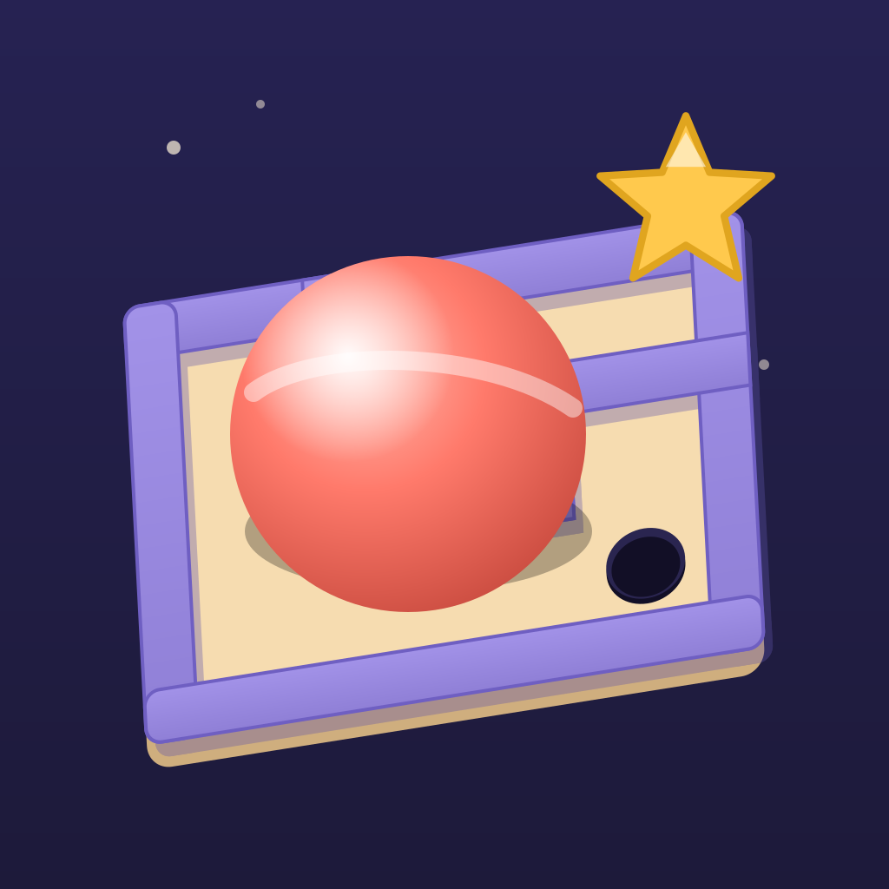

구슬 대전폰을 기울여 구슬을 굴리는 3D 미로 타임어택 게임입니다. 맵 100개, 난이도 4단계, 한 폰으로 둘이 대결. 인터넷 연결이 필요 없고 수집하는 정보가 없습니다.
구슬이 반대로 굴러가요. 설정에서 감도를 조절하고, 플레이 중 [중립] 버튼으로 기준 자세를 다시 잡아 보세요. 그래도 이상하면 아래로 기기 모델과 함께 알려 주세요.
기울기 권한을 거부했어요. 설정 > 조작 방식에서 "터치"를 고르면 화면을 끌어서 조작할 수 있어요. iPhone은 설정 앱 > 구슬 대전 > 동작 및 피트니스에서 권한을 다시 켤 수 있어요.
기록이 사라졌어요. 기록은 기기에만 저장돼서 앱을 삭제하면 함께 지워집니다.
A tilt-to-roll 3D maze time-attack game. No internet, no data collection. Questions: sangwon2618@gmail.com · Privacy Policy